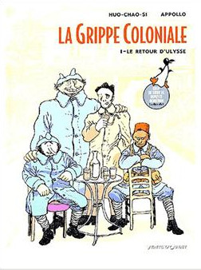
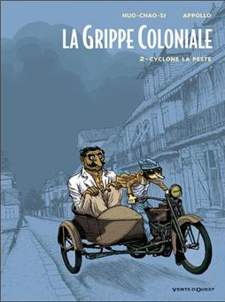

Voilà preque 10 ans qu’on attendait. Le deuxième volet de la grippe coloniale est enfin sorti ! Merci Apollo et Serge Huo-Chao-Si d’enfin clore cette tranche d’histoire peu connue de l’île de la Réunion. Encore une fois, c’est une claque qu’on reçoit de la part de ces deux artistes qui ont fait leur début dans feu le Cri du Margouillat.
La Grippe coloniale, c’est la grippe espagnole dont l’arrivée à la Réunion est relatée dans le premier Album «Le retour d’Ulysse», sorti en 2004. Elle est apportée avec le bateau qui ramènne les poilus originaires de l’île à la fin de la seconde guerre mondiale. L’album évoque avec douleur, humour et poesie tous les changements qui affectent le monde à ce tournant de siècle. L’île de la Réunion, confetti délaissé de l’empire colonial français, n’est pas épargnée par les changements, changements sociaux comme l’émencipation des cafres et la présence grandissante des commerçants chinois ou des cérémonies malbares dans la rue, changements politiques avec le début de lutte de classes mais aussi et surtout la résistance à ces changements face à laquelle les quatre héros de l’histoire vont faire face avec leur éloquence ou leur résigantion. Quatre héros, héros de guerre et gueules cassées, à la gueule dessinée à grand traits pour coller à leur verbe. Voltaire, Ulysse, Camille et Evariste le narrateur, quatre copains que la guerre, loin de chez eux a réuni alors que leurs origines les prédestinaient à s’ignorer.
Ce premier album avait reçu le prix de la critique au Festival international de la bande dessinée d'Angoulême de 2003.
Ce prix et cette histoire étaient très encourageant mais le deuxième tome s’est fait attendre chez Vents d'Ouest, laissant les lecteurs sur leur faim. Ils ont dût attendre 9 ans pour enfin lire le deuxième tome et la fin de l’histoire.
En 9 ans, le dessin de Huo-Chao-Si s’est affiné mais le trait ascerbe sur la société d’alors subsiste. En 9 ans, c’est seulement quelques mois plus tard que nous retrouvons nos héros sur leur île alors que la grippe espagnole s’est installée pour de bon. Elle apporte la mort est les moments tragiques. Nos héros de la guerre découvrent l’amour mais la violence de cette peste ainsi que la bêtise des hommes vont mettre fin à ces histoires. Ce nouvel album montre enfin la guerre qu’ont vécu les héros. Des flash-back qui ont mis le temps avant de ressurgir de la tête des vétérants, comme s’ils n’avaient pas réussi à chasser ces mauvais souvenirs. La vie à la Réunion n’est pas meilleure. À la grippe espagnole s’ajoute la connerie humaine, la chasse raciste aux boucs-emissaires, les ratonnades…
À la fin, le «Cyclone la peste», c’est le titre de l’album, a balayé la maladie hors de l’île et les survivants fêtent à la fois la victoire (on a failli oublier que nous avions gagné la guerre avec nos gueules cassées) et la fin de l’épidémie. Pour Évariste le narateur, l’un des derniers survivants de cette histoire, c’est une nouvelle vie qui s’annonce mais c’est surtout un grand vide.
Cette histoire de guerre et d’épidemie n’est pas gaie mais elle est peinte de mains d’artistes avec humour et poésie. Elle offre une tranche d’histoire de notre pays d’un angle que l’on ne voit pas assez souvent.